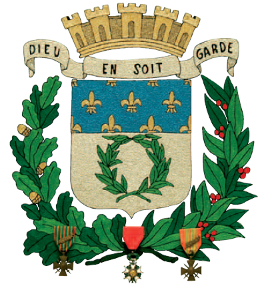
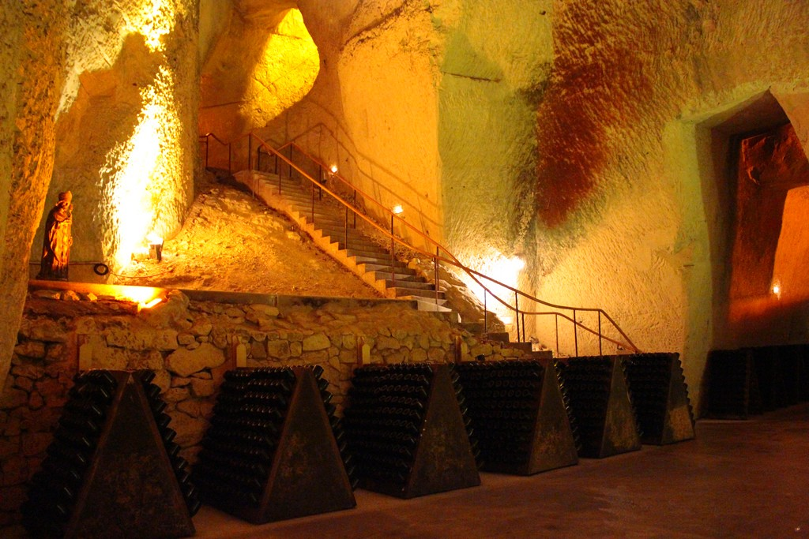
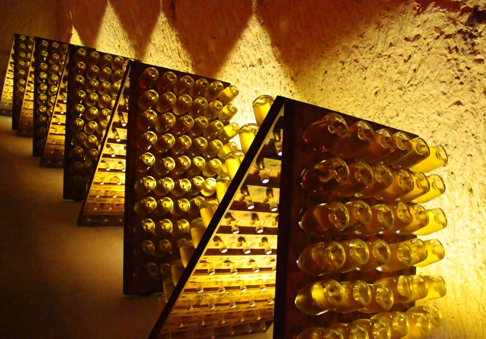
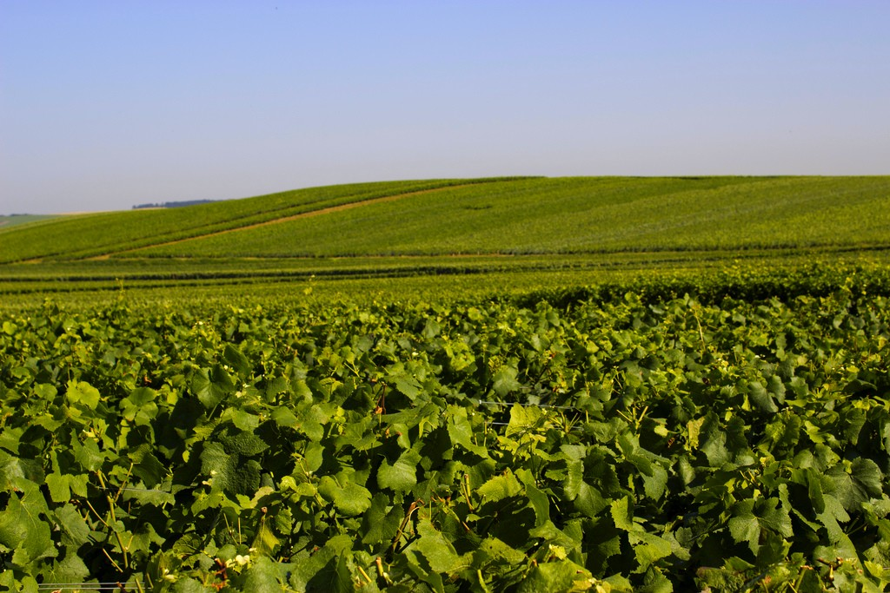
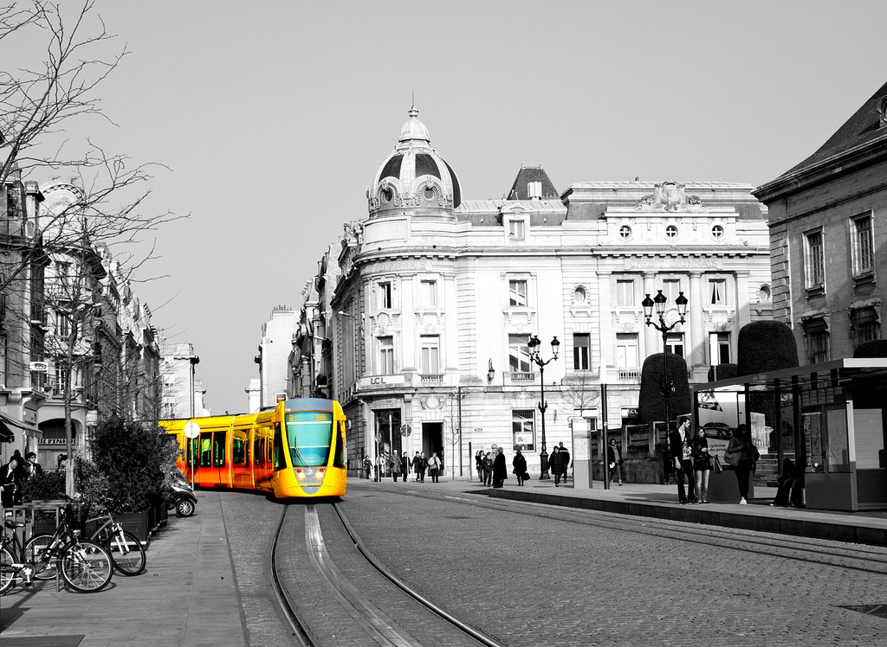
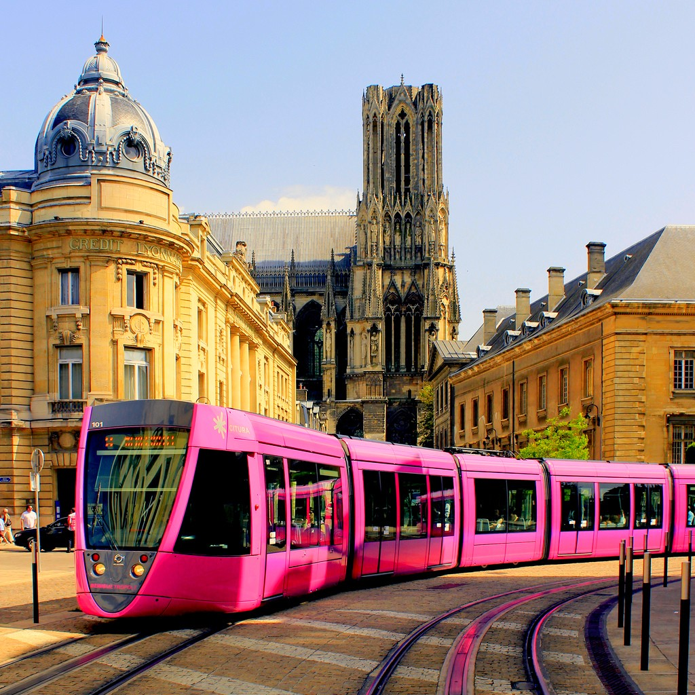

Reims, anciennement orthographiée Rheims, est une commune française située dans la région Champagne-Ardenne et plus précisément dans le département de la Marne. Cette ville, composée de 184 984 habitants, appelés Rémois ou Rémoises, est la douzième commune de France de par sa population et la ville la plus peuplée de la région Champagne-Ardenne.
La ville a pour surnom « la cité des sacres » ou « la cité des rois », car en effet ; c’est sur le futur emplacement de Notre Dame de Reims que Clovis fut baptisé par Saint Remi et que furent sacrés un très grand nombre de rois de France pendant plus de dix siècles à partir de Louis Le Pieux en 816 jusqu’à Charles X en 1825.

Les fleurs de lys rappellent le rôle de Reims, « Ville des Sacres ». Le rinceau constitue une « arme parlante », symbole homonymique de Reims. Au-dessus de l'écu, se trouve une couronne murale semblable à une fortification pour évoquer les sièges soutenus par Reims sans démériter. Dans la partie inférieure de l'écu, apparaissent les décorations attribuées à la Ville: la Légion d'Honneur et les Croix de Guerre pour les Première et Seconde Guerres mondiales.
Quand l'archevêque Ebbon décide de construire une nouvelle cathédrale au début du IXe siècle, il utilise les pierres des remparts (en état de démantèlement) avec l'autorisation du roi Louis-le-Débonnaire qui met la ville sous la protection divine puisque les murailles n'assurent plus leur fonction défensive: «Que Dieu en soit garde!»
Ce qui fait principalement la réputation de Reims est le Champagne. En effet, Reims se situe à la limite du bassin sédimentaire profond parisien. Elle est bordée au sud par la Montagne de Reims, dont les versants abritent une partie des meilleurs crus du vignoble champenois, au Nord-Ouest par le massif de Saint Thierry et à l'est par le mont Berru.
La richesse de Reims se trouve au niveau de son patrimoine, celui-ci comporte de nombreux monuments historiques et façades Art déco. De plus, elle est désignée Ville d’Art et d’Histoire et compte quatre sites inscrits sur la liste du patrimoine mondial de l’UNESCO : La cathédrale Notre Dame, l’Abbaye Royale de Saint Remi, le Palais de Tau, la Basilique Saint Rémi.
L’un des atouts historiques de l’économie rémoise est le Champagne, inventé au XVIIème siècle par Dom Pérignon.
 

La ville de Reims est organisée par de nombreuses voies de communication et de transports. En effet, la ville se situe au carrefour de trois autoroutes. De plus, après un premier projet avorté datant des années 1980, l'année 2011 marque le retour du tramway à Reims.
Son tracé est long de 11,2 km et est ponctué de 23 stations pour deux. Le réseau Citura et le tramway sont exploités, dans le cadre d'un partenariat public-privé, par la société Concessionnaire Mobilité Agglomération Rémoise (MARS). Elle est aujourd'hui desservie par les TER Champagne-Ardenne et certains TER Picardie à destination des gares d'Amiens, Cambrai, Châlons-en-Champagne, Charleville-Mézières, Château-Thierry, Dijon, Épernay, La Ferté-Milon, Metz, et de Sedan.
 


La ville est historiquement liée au sport. Elle a été la première ville sacrée « ville la plus sportive de France » par le quotidien L'Équipe en 1937.
Du fait de son potentiel touristique, Reims compte près de 60 hôtels ainsi qu'une aire de stationnement pour camping-cars mais aussi un centre international de séjour et une résidence séjour et affaire dans le quartier Clairmarais, Reims possède donc des atouts afin d’accueillir le mieux possibles les touristes qui souhaiteraient visiter la richesse de cette ville.
Reims est une ville en relation avec de nombreuses autres villes du monde, car, en effet ; Reims est jumelée avec :
- Florence depuis 1954
- Brazzaville depuis le 5 juillet 1961
 Cantorbéry depuis le 13 mai 1962
Cantorbéry depuis le 13 mai 1962 Salzbourg depuis 1964
Salzbourg depuis 1964 Aix-la-chapelle depuis 1967
Aix-la-chapelle depuis 1967- Arlington depuis 2004
- Kutna hora depuis le 23 fevrier 2008
« Il n'est de cité que je préfère à Reims : c'est l'ornement et l'honneur de la France. »
Jean De La Fontaine